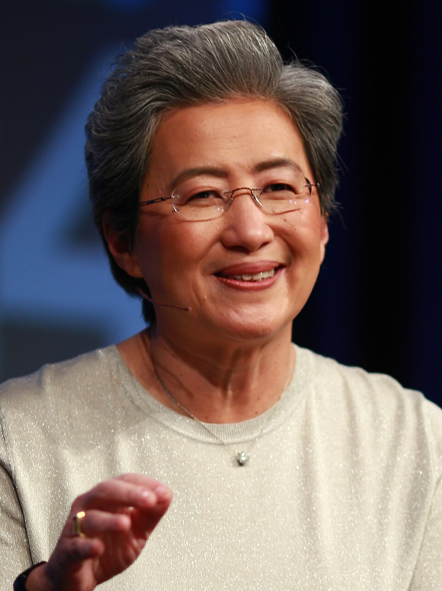

Lisa Tzwu-Fang Su (chino: 蘇姿丰; pinyin: Sū Zīfēng; Tâi-lô: so Tsu-hong; nacido el 7 de noviembre de 1969) es un ejecutivo de empresa, científico informático e ingeniero eléctrico taiwanés y estadounidense que ha sido presidente y director ejecutivo de la empresa estadounidense de semiconductores AMD desde 2014. Su nació en Taiwán y emigró a Estados Unidos con su familia cuando era niña. Tras obtener tres títulos en el Instituto Tecnológico de Massachusetts (MIT), trabajó en Texas Instruments, IBM y Freescale Semiconductor en puestos de ingeniería y gestión.Es conocida por su trabajo desarrollando tecnologías de fabricación de semiconductores de silicio sobre aislante[6] y chips semiconductores más eficientes durante su etapa como vicepresidenta de Investigación de Semiconductores de IBM y Centro de Desarrollo. Su también es miembro del Consejo Empresarial.
Su fue nombrado presidente y CEO de AMD en octubre de 2014, tras incorporarse a la empresa en 2012 y ocupar cargos como vicepresidente senior de las unidades globales de negocio de AMD y director de operaciones. Anteriormente formó parte del consejo de Cisco Systems[13] y actualmente forma parte del consejo de la U.S. Semiconductor Industry Association,[12] además de ser miembro del Institute of Electrical and Electronics Engineers (IEEE). Reconocida con numerosos premios y reconocimientos, Su fue nombrada Ejecutiva del Año por EE Times en 2014,[12] una de las Grandes Líderes del Mundo en 2017 por Fortune y fue la primera mujer en ser nombrada Time CEO del año en 2014, y una segunda vez en 2024. También se convirtió en la primera mujer en recibir la Medalla Robert Noyce del IEEE en 2021. Durante su etapa como CEO de AMD, la capitalización bursátil de AMD ha crecido de aproximadamente 3.000 millones de dólares a más de 200.000 millones. AMD también superó a Intel en capitalización bursátil por primera vez. En 2024, Su fue seleccionada como Fellow del Instituto de Investigación en Tecnología Industrial (ITRI). [16] Forbes la nombró la décima mujer más poderosa del mundo en 2025. Fue nombrada una de las "Arquitectas de la IA" en el premio Persona del Año de Time en 2025.